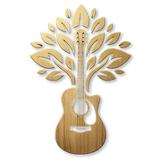
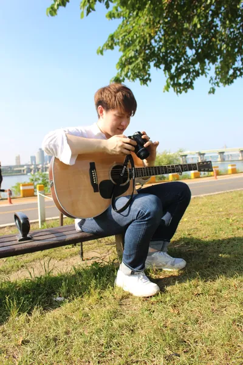
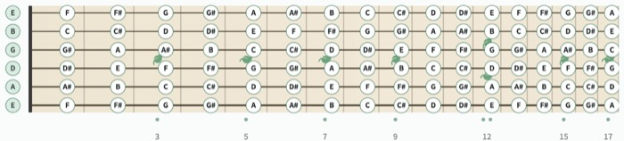
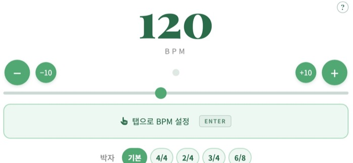
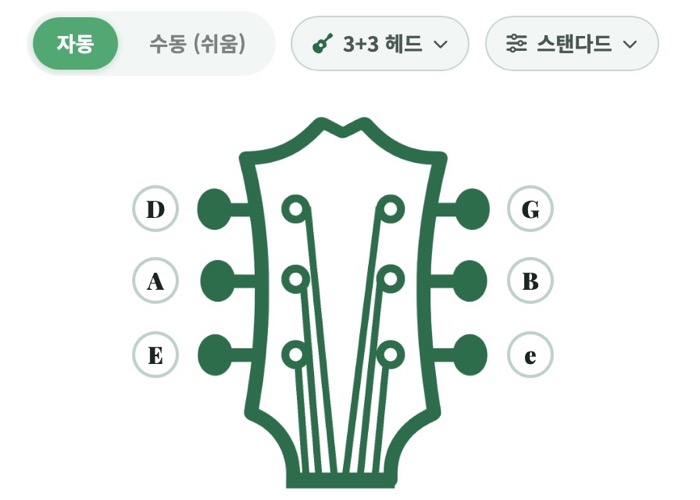
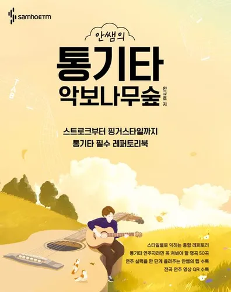
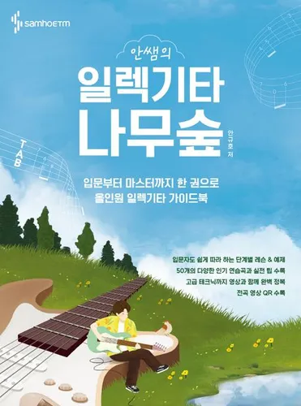
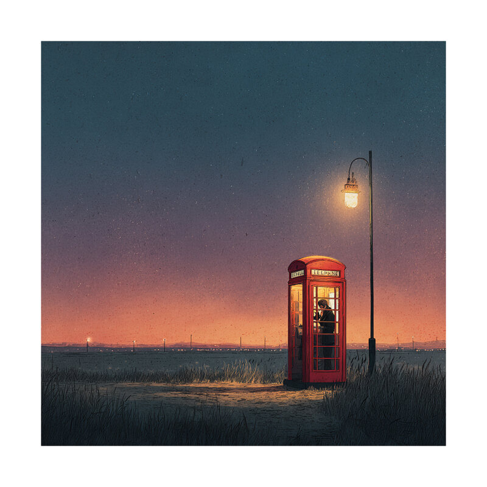
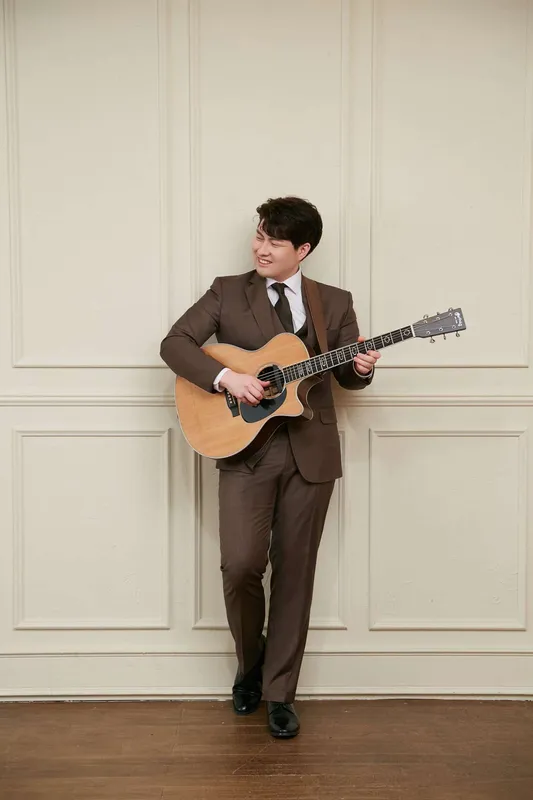

스트로크부터 핑거스타일까지, 통기타 필수 레퍼토리북

입문부터 마스터까지 한 권으로, 올인원 일렉기타 가이드북
쿠팡 링크는 쿠팡 파트너스 활동의 일환으로, 이에 따른 일정액의 수수료를 제공받습니다.


안녕하세요, '안쌤의 기타나무숲' 안규호입니다.재미있으면서도 왠지 마음에 남는 장면들을기타와 노래로 기록하고 있습니다.
스튜디오 기타 세션과 라이브 무대에서 쌓아온 연주자로서의 진지한 모습부터, 음악적 노하우를 정교하게 담아낸 교본과 악보집을 집필하는 작가의 시선, 일상의 사소한 부분을 재치 있게 포착해내는 크리에이터로서의 감각까지-